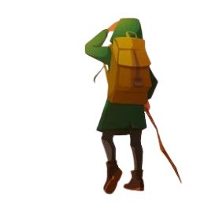

ADVENTURE
Annabelle Comes Home!
Annabelle Comes Home is a 2019 American supernatural horror film written and directed by Gary Dauberman, in his directorial debut, from a story by Dauberman and James Wan, who also served as producer with Peter Safran. It serves as a sequel to 2014's Annabelle and 2017's Annabelle: Creation, and as the sixth installment in The Conjuring Universe franchise. The film stars Mckenna Grace, Madison Iseman, and Katie Sarife, along with Vera Farmiga and Patrick Wilson, who reprise their roles as Ed and Lorraine Warren.
In early April 2018, Warner Bros. Pictures announced that a then-untitled film in The Conjuring Universe franchise would be released on July 3, 2019. Later that month, it was announced that the film would be another installment in the Annabelle series, with Dauberman signed on to write and direct the film in his directorial debut, based on a story treatment written by Dauberman and Wan. Principal photography commenced by mid-October and officially wrapped in December 2018 in Los Angeles.
GHOST HOUSE
Ghosts in the House, set in the northern United States in the 1830s, is a story about a young girl named Virginia who hears strange noises at night coming from her attic. Suspense builds as Virginia gets the idea that her parents know something about this but are keeping it from her.
John and Patty rent the haunted house and invite their friends to come stay where, on the twelfth night, they tell each other their ghost stories. Dickens, who contributes three parts to the portmanteau, concludes the tale with a Christmas wish for his readers. In the middle of the night I was woken up by a strange sound. As I opened my eyes and focused on the sound, I felt someone was walking up and down outside my room. My heart began palpitating uncontrollably! I dared to go to the window and see who could be walking up and down outside the room!
Annabelle doll
The real Annabelle doll reportedly committed a series of attacks in the early 1970s before it was confined in the Occult Museum of Ed and Lorraine Warren in Connecticut.
The real Annabelle doll reportedly committed a series of attacks in the early 1970s before it was confined in the Occult Museum of Ed and Lorraine Warren in Connecticut.
Annabelle!
The real Annabelle doll reportedly committed a series of attacks in the early 1970s before it was confined in the Occult Museum of Ed and Lorraine Warren in Connecticut.
Annabelle doll is one of the nine pirate lords in the Brethren Court, the Pirate Lords of the Seven Seas. He is the caption of the Black Pearl and his main enemy is Hector Barbossa. Later, he tries to escape his blood debt to the legendary Davy Jones while fighting the East India Trading CompanyThe real Annabelle doll reportedly committed a series of attacks in the early 1970s before it was confined in the Occult Museum of Ed and Lorraine Warren in Connecticut..